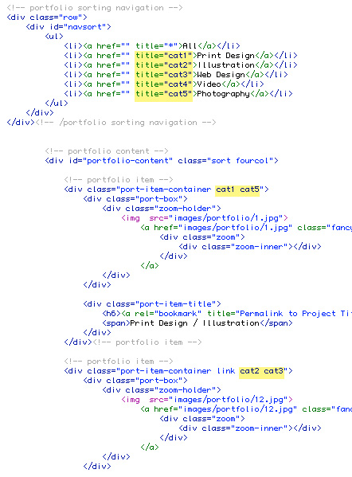

“Hipster” Documentation by “Beantown Design” v1.7
“Hipster”
Created: 11/01/2012
Last Updated: 6/12/2013
By: Beantown Design
Twitter.com/BeantownDesign
Thank you for purchasing Hipster. If you have any questions that are beyond the scope of this help file, please feel free to visit our support forum. Thanks!
Table of Contents
- Fonts
- Responsive Design Explained
- CSS Files
- HTML Structure
- Social Icons
- Main Navigation
- Homepage Slider
- Homepage Video
- Homepage Content
- Setting up Logo
- Staff Page
- FAQ Page
- Service Icons
- Lists
- Typography
- Responsive Videos
- Standard Portfolio Pages
- Sortable Portfolio Page
- Single Portfolio Pages
- Contact Map
- Contact Form
- Facebook Box
- Twitter Feed
- Instagram Feed
- Choosing a Boxed Layout
- Setting Page Background & Footer Backgrounds
- Setting Full Screen Image Backgrounds / Rotating Full Screen Backgrounds
- Sources and Credits
A) Installing Fonts - top
The following fonts have been included in your template, so no extra work is included to use them!
http://www.fontsquirrel.com/fonts/download/KelmscottRoman
http://www.fontsquirrel.com/fonts/download/League-Gothic
http://www.fontsquirrel.com/fonts/Droid-Sans
B) Responsive Design Explained - top
Most likely you are already familiar with responsive design, including how it works, what the benefits are, etc. I figured I would briefly go over the topic in case you are unfamiliar with responsive design.
Before responsive design most sites were a fixed width, meaning the content area would always be the same size, no matter what screen size you were using. This was fine since most people were viewing websites from similar desktop browsers. As technology evolved there became a large variety of devices/screen sizes that you could now view a website on. I'm sure you have visited a fixed width website on your smartphone and had to deal with zooming, scrolling, loading issues, etc. Responsive design was the solution to this issue. Responsive layouts adjust the content to the screen size you are using, instead of being a fixed width. There are many benefits (no zooming, no need for an additional mobile-specific website, etc).
C) CSS Files - top
Hipster was built on top of the popular responsive framework Skeleton. Skeleton is a responsive framework which uses media queries to adjust the size of columns and rows depending on your screen width. Skeleton also includes basic CSS styling. Inside your stylesheets folder you'll see a base.css stylesheet. This stylesheet contains the Skeleton framework CSS styling and structure (modified for Hipster). The main stylesheet for Hipster is styles.css. The top of the stylesheet has a table of contents which explains the order of all CSS section located in the stylesheet.
There are 3 different color schemes which can be chosen by using style1.css, style2.css or style3.css. There are also option black and white icons which can be used, the CSS code for these icons is located within style-bw.css.
D) HTML Structure - top
A typical page in Hipster contains the head, header section with logo and nav, the left column, right column and then the footer. It's easy to create custom layouts once you understand how the framework works. To create a section that is 960px wide and centers itself in the browser window, add the class "container" to the div.
The Hipster framework is created with a 16 column layout (so from the left column of the .container to the right column of the .container there are 16 columns). The basic structure to set up a "row" in your layout is the add a div with the class of container (the class .container centers the content within in the middle of the browser window), inside that add a div with the class row (the class .row clears other floats/rows) and then within that add divs with the width you want, the total should add up to 16 columns. These columns stack when smaller browser window sizes are being used. There are additional options such as one-third columns, see the column.html page for sample code.
Example:
Example:
Example:
E) Social Icons - top
Below is a screenshot showing the available social icons for use in the header. Notice the title of the social icons, these titles are the text in the tooltips on mouse hover. The css class decides which icon is used.
F) Main Navigation - top
The main navigation of Hipster is an unordered list (see below). Nested untitled lists become drop down menus. Add the class level-1, level-2, level-3 on unordered lists, depending on what level they're on. The menu becomes a dropdown menu for smaller screens, which is great for mobile devices.
G) Homepage Slider - top
Located at the bottom of your index.html file you will see the slider javascript code. There are 12 possible transition effects for the slider. To change effects simply change the name of the javascript file, highlighted below.
The options are:
- script-blast.js
- script-blinds.js
- script-blur.js
- script-fade.js
- script-fly.js
- script-kenburns.js
- script-rotate.js
- script-slices.js
- script-slide.js
- script-squares.js
- script-stack.js
- script-stackvertical.js
The size of the slider images is 940 X 404px. The size of the tooltip images is 209 x 90px. Below you can see the slider code, first the images are called out and then the bullet (tooltip) images are called out. Notice the two highlighted areas below, which show the 2 sections used for the text captions over the images.
H) Homepage Video - top
Thanks to the FitVids.js script being used in Hipster, adding a responsive video to the homepage is as easy as adding the embed code, example (see index-video.html in your download):
I) Homepage Content- top
Below the slider or video on your homepage you will see the main title and service areas:
Click here to view the possible service icons.
J) Setting up Logo - top
The logo in Hipster is placed as a background image on the h1 tag with the id="logo"
To setup the logo in the header of your website you will need to create a few logo image files. The Hipster logo was created with 4 different versions (a version for non-HD large screens, a version for HD large screens, a version for non-HD small screens, and a version for HD small screens). Adding the 4 versions takes a little extra work, but it's worth it. This allows your logo to look super sharp on retina displays, and also allows you to show a larger version of the logo on larger browsers. The easiest way to add your logo would be to make your logo the same size as the 4 demo images included with the download, if you need to use different size this is the CSS that you want to adjust.
- Don't make your small logo version any wider than 300px.
- The HD versions of the logos are created exactly twice as large as the non-HD version, CSS background-size then sets the size of this image, making it the correct size and clear.
K) Staff Page - top
Below is a screenshot showing where you can edit the info for staff members, including the email address, name, title, description and social icons.
The complete list of icons available for use on the staff page are as follows (these are the css class names used to choose an icon):
- dribbble
- linked
- flickr
- vimeo
- plus
- pin
- stumble
- yelp
- youtube
- rss
- paypal
- phone
- map
- linked
L) FAQ Page - top
To add info to the FAQ accordion, enter your heading title into the h2 tag with the class="accordion-header" and enter the content for the question in following div with the class="accordion-content".
M) Service Icons - top
Hipster comes with 27 @2X icons, perfect for your services or any other creative use. To choose your icon, simply change the class name, shown below (see services.html with your download for all icons):
Possible Icons:
- search
- clip
- phone
- map
- share
- heart
- printer
- gear
- trophy
- camera
- palette
- circles
- music
- bag
- mic
- time
- security
- warning
- files
- video
- pics
- cloud
- sound
- write
- flag
- users
- mix
- eye
- bell
- chat
N) Lists - top
There are 7 options for styling unordered lists. To choose an option add one of the following classes to the UL tag:
- bullets
- arrow1
- arrow2
- arrow3
- check
- star
- diamond
O) Typography - top
Typography.html shows typography styles in Hipster. To add a retro shadow to an item, add: class="retro-shadow" to an html element.
P) Responsive Videos - top
FitVids.js has been added to Hipster to make embedding responsive videos super easy. See videos.html for embedding demos, simply embed your video on the page and FitVids.js makes the video expand to the width of the column it is within.

Q) Standard Portfolio Pages - top
The standard portfolio page layouts use columns to resize the portfolio items as screen sizes change. A class of fancybox is placed on links opening the responsive lightbox for images, and the classes various and fancybox.iframe are placed on the links that open the lightbox for videos. By default the magnifying glass is shown when hovering over portfolio items. Other possible hover graphics can be applied by adding a class on the portfolio-item-container div (see the video example below). The possible classes are video, link and email. The title tag on the image link is used as the title which is displayed when viewing the lightbox.
R) Sortable Portfolio Page - top
The sortable portfolio has a navigation above the images, this is where you set your categories. Add a unique title on each link in this nav. To place an image in a category you need to add the title name to the port-item-container as a class (see below). Items can be in multiple categories, simply add multiple title names as classes.

S) Single Portfolio Pages - top
The single portfolio page for images has an easy to use image slider. Simply add your images to the list shown below:
An additional single video template page is included. Simply embed your video and the FitVids.js script makes your video responsive:
T) Contact Map - top
To set the latitude and longitude of the marker on the contact map (as well as set the zoom level), open screen.js and look for the following, on line #25 :

You can get the longitude and latitude of your address with this tool online.
U) Contact Form - top
To setup your address form open includes > form.php. On line #41 you will see the line to enter your email address (the address you want the form submission to be mailed to).
V) Facebook Box - top
Adding a Facebook like box is easy with code provided by Facebook. Usually the Facebook box is a set width, Hipster has custom CSS code so the like box is responsive and will change depending on the column width.
W) Twitter Feed - top
On line #450 in scripts.js you will find the spot to enter your Twitter user name and the amount of tweets you want to display.
X) Instagram Feed - top
On line #602 in scripts.js you will find the spot to enter your Instagram user ID and the number of recent images that you want to display. Click here to find your Instagram user ID.
Y) Choosing a Boxed Layout - top
The default layout of Hipster allows the background pattern to show through the content area nd the top header bar and footer area are both 100% width of the screen. You can instead choose to use a "boxed" layout, which pulls the header and footer bars into the middle and sets a background with a subtle shadow to the middle content area. This gives a different effect, useful if you choose to use a full screen image as your background, or a daker pattern. To choose the boxed layout open base.css andd scroll to the very bottom of the file. You will see code commented out. If you un-comment this code the boxed layout will be activated. The highlighted area in yellow below shows where you can set the background color of the boxed content area, as well as the opacity level.
Not-Boxed (default):
Boxed:
Z) Setting Page Background & Footer Backgrounds - top
Included with Hipster are multiple background textures for customizing your site. The images are broken into light and dark folders inside the images > backgronds folder. Below you can see the code you need to change in your stylesheet to choose a different background.
AA) Setting Full Screen Image Backgrounds / Rotating Full Screen Backgrounds - top
Setting a full screen image and setting multiple transitioning full screen background images on a page is simple, just use the code below. You can also change the transition speed with this code. Place the code at the bottom of your page.
Single Image:
Rotating Images:
AB) Sources and Credits - top
I've used the following images, scripts or other files as listed.
- Tipsy (MIT license)
- gMap (MIT license)
- Responsive Slides (MIT license)
- jQuery Backstretch (MIT license)
- Isotope (Commercial license)
- WOW! Slider (Enterprise license)
- UItoTop (GNU GPLv2 license)
- fancyBox (Commercial license)
- jQuery Simple Instagram Fancybox (Extended license)
- FitVids (WTFPL license)
- Get Skeleton Framework (MIT license)
- Backgrounds from subtlepatterns.com (CC BY-SA license)
- Droid Sans font from Google Font API (Apache license)
- Fonts from fontsquirrel.com (SIL Open Font license)
- Icons from entypo.com (CC BY-SA license)
- Demo Photos from Photodune
- Demo Videos:
Once again, thank you so much for purchasing Hipster! Make sure to follow Beantown Design on Twitter, Facebook, ThemeForest (for updates and new items), and check out WebDesignAndSuch.com, Beantown Design's web design/development blog. If you need help please visit our support forum.
Beantown Design